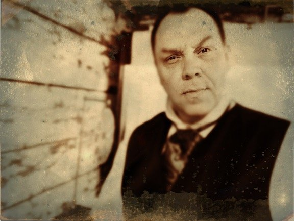

About Carnegie
Dean Carnegie, The Artist of Mystery

You might think of Carnegie as a genuine traveler through time. Born in the twentieth century, he spends most of his time in the nineteenth, but in order to bring the Astonify Show to you, he must journey to the twenty first.
Dean Carnegie is a full time illusionist, escape artist and creator of theatrical mysteries, based in Nashville, Tennessee. In thirty years as a working performer he has given more than eight thousand shows.
A few of the rooms he has played
- Performed for three U.S. Presidents.
- Two evening performances at The National Theatre in Washington D.C., in the theatre's “Monday Night at the National” series.
- Spoke on the TEDx stage: A Magician's Best Trick: Reality.
- Hosted a French television documentary on Houdini for Arte.
- Ran his own fifty seat venue, The Underground Magic Theater, for four years.
- The Old Warrenton Jail, Warrenton, Virginia, on two separate occasions.
The Magic Detective
Alongside performing, Carnegie is a historian of magic and show business. He presents lectures on the conjurers of the past (or, as he calls them, his friends), writes The Magic Detective, with more than seven hundred articles on magic history since 2011, and hosts the Magic Detective Podcast.
The painter
He is also a painter, and his usual subject is the magicians of the past. His magic artwork has appeared on the cover of Elan Magazine and twice on the cover of MAGIC Magazine. See the paintings at art.carnegiemagic.com.
For everything else, including his larger stage shows, visit CarnegieMagic.com.